機率分布 (離散型)
簡介
在程式設計領域，「設計模式」是一些經常被使用到的物件樣式，而在數學領域，也同樣存在著某些「常見模式」，在機率統計領域，這些「常見模式」就是機率分布。
機率分布可以分為「離散型」與「連續型」兩類，以下是一些常見的離散型機率分布。
| 離散機率模型 | 密度函數 | R 函數名稱 | 說明 |
|---|---|---|---|
| 二項分布 | 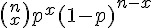 | binom(n:size, p:prob) | n:樣本數, p:正面機率, n 次試驗中有 x 個成功的機率 |
| 多項分布 | 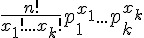 | multinom(n:size, p(1..k):prob) | n:樣本數, p[1..n]:各項的機率 |
| 負二項分布 | 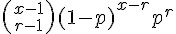 | nbinom(size, prob) | x:樣本數, , p:正面機率, 要得到第 r 次成功所需要的試驗次數 |
| 幾何分布 | 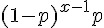 | geom(p:prob) | p: 成功機率, 第一次成功所需要的試驗次數 |
| 超幾何分布 | 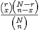 | hyper(N:m,n:n,r:k) | m:白球數量, n:黑球數量, k:抽出球數, 同二項分布，但取樣後不放回 |
| 布瓦松分布 | 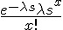 | pois(lambda) | k:期望值, 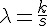 , 在 s 時間內，事件出現平均 k 次 |
二項分布 (Binomial distribution)
分布公式： 
意義：dbinom(x; n, p)：在 n 次柏努力試驗中有 x 次成功的機率 (已知單次試驗成功機率為 p)。
R 的公式：dbinom(x; n, p) = p(x) = choose(n,x) p^x (1-p)^(n-x)
- R 函數：binom(size=n:樣本數, prob=p:成功機率)
- http://stat.ethz.ch/R-manual/R-patched/library/stats/html/Binomial.html
二項定理： 
特性


動差生成函數： 
R 程式範例：二項分布曲線圖
> n=10; p=0.3; k=seq(0,n)
> plot(k, dbinom(k,n,p), type='h', main='dbinom(0:20, n=10, p=0.3)', xlab='k')
> 
二項分布的圖形
R 程式範例：(定理) 常態分配可用來逼近二項分布
假如 n 夠大的話，通常只要 n*min(p, 1-p) > 5 就可以採用下列逼近方式

原始程式：
op=par(mfrow=c(2,2))
n=3; p=0.3; k=seq(0,n)
plot(k, dbinom(k,n,p), type='h', main='dbinom(n=3, p=0.3)', xlab='k')
curve(dnorm(x,n*p,sqrt(n*p*(1-p))), add=T, col='blue')
n=5; p=0.3; k=seq(0,n)
plot(k, dbinom(k,n,p), type='h', main='dbinom(n=5, p=0.3)', xlab='k')
curve(dnorm(x,n*p,sqrt(n*p*(1-p))), add=T, col='blue')
n=10; p=0.3; k=seq(0,n)
plot(k, dbinom(k,n,p), type='h', main='dbinom(n=10, p=0.3)', xlab='k')
curve(dnorm(x,n*p,sqrt(n*p*(1-p))), add=T, col='blue')
n=100; p=0.3; k=seq(0,n)
plot(k, dbinom(k,n,p), type='h', main='dbinom(n=100, p=0.3)', xlab='k')
curve(dnorm(x,n*p,sqrt(n*p*(1-p))), add=T, col='blue')輸出圖形：

R 程式範例：二項分布統計圖
> x = rbinom(100000, 100, 0.8)
> hist(x, nclas=max(x)-min(x)+1)
> 
R 程式範例四：白努力試驗
> y <- rbinom(50, 25, .4)
> m1 <- mean(y)
> m2 <- sum(y) / 25
> y
[1] 12 9 9 9 12 11 10 11 5 7 8 7 16 6 12 13 9 12 9 13 7 12 15 8
[25] 9 7 10 4 10 10 9 10 13 8 10 14 8 11 11 10 10 9 7 13 5 5 11 13
[49] 9 8
> m1
[1] 9.72
> m2
[1] 19.44
> m3 <- sum ( (y-m1)^2 ) / 50
> m3
[1] 6.8816
> 說明： y 中的每個數字，代表模擬投擲 25 次白努力試驗後，成功的次數有幾次。因此 rbinom(50, 25, .4) 總共進行了 50*25 次白努力試驗。
參考文獻
- Distributions in the stats package -- http://stat.ethz.ch/R-manual/R-patched/library/stats/html/Distributions.html
- Wikipedia:二項分佈 -- http://zh.wikipedia.org/wiki/%E4%BA%8C%E9%A0%85%E5%88%86%E4%BD%88
- Wikipedia:Binomial_distribution -- http://en.wikipedia.org/wiki/Binomial_distribution
負二項分布 (Netative binomial distribution)
公式： 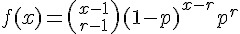
範圍：r=1,2,3,.... ; x= r, r+1, r+2, ....
意義：要得到第 r 次成功所需要的試驗次數 x;
R 函數： nbinom(size, prob) ; r:size:成功數, p:prob:成功機率
特性
- 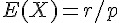
- 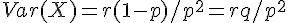
動差生成函數： 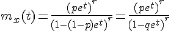
R 程式範例：負二項分布曲線圖
> n=20; p=0.4; k=seq(0,50)
> plot(k, dnbinom(k,n,p), type='h', main='dnbinom(k,n=20,p=0.4)', xlab='k')
> 
> x = rnbinom(100000, 100, 0.8)
> hist(x, nclass=max(x)-min(x)+1)
> 
R 程式範例 (進階)
require(graphics)
x <- 0:11
dnbinom(x, size = 1, prob = 1/2) * 2^(1 + x) # == 1
126 / dnbinom(0:8, size = 2, prob = 1/2) #- theoretically integer
## Cumulative ('p') = Sum of discrete prob.s ('d'); Relative error :
summary(1 - cumsum(dnbinom(x, size = 2, prob = 1/2)) /
pnbinom(x, size = 2, prob = 1/2))
x <- 0:15
size <- (1:20)/4
persp(x,size, dnb <- outer(x, size, function(x,s) dnbinom(x,s, prob= 0.4)),
xlab = "x", ylab = "s", zlab="density", theta = 150)
title(tit <- "negative binomial density(x,s, pr = 0.4) vs. x & s")
image (x,size, log10(dnb), main= paste("log [",tit,"]"))
contour(x,size, log10(dnb),add=TRUE)
## Alternative parametrization
x1 <- rnbinom(500, mu = 4, size = 1)
x2 <- rnbinom(500, mu = 4, size = 10)
x3 <- rnbinom(500, mu = 4, size = 100)
h1 <- hist(x1, breaks = 20, plot = FALSE)
h2 <- hist(x2, breaks = h1$breaks, plot = FALSE)
h3 <- hist(x3, breaks = h1$breaks, plot = FALSE)
barplot(rbind(h1  counts, h3$counts),
beside = TRUE, col = c("red","blue","cyan"),
names.arg = round(h1  breaks)]))執行結果：
> require(graphics)
> x <- 0:11
> dnbinom(x, size = 1, prob = 1/2) * 2^(1 + x) # == 1
[1] 1 1 1 1 1 1 1 1 1 1 1 1
> 126 / dnbinom(0:8, size = 2, prob = 1/2) #- theoretically integer
[1] 504.0 504.0 672.0 1008.0 1612.8 2688.0 4608.0 8064.0 14336.0
>
> ## Cumulative ('p') = Sum of discrete prob.s ('d'); Relative error :
> summary(1 - cumsum(dnbinom(x, size = 2, prob = 1/2)) /
+ pnbinom(x, size = 2, prob = 1/2))
Min. 1st Qu. Median Mean 3rd Qu. Max.
-2.22e-16 -2.22e-16 -2.22e-16 -1.48e-16 0.00e+00 0.00e+00
>
> x <- 0:15
> size <- (1:20)/4
> persp(x,size, dnb <- outer(x, size, function(x,s) dnbinom(x,s, prob= 0.4)),
+ xlab = "x", ylab = "s", zlab="density", theta = 150)
> title(tit <- "negative binomial density(x,s, pr = 0.4) vs. x & s")
>
> image (x,size, log10(dnb), main= paste("log [",tit,"]"))
> contour(x,size, log10(dnb),add=TRUE)
>
> ## Alternative parametrization
> x1 <- rnbinom(500, mu = 4, size = 1)
> x2 <- rnbinom(500, mu = 4, size = 10)
> x3 <- rnbinom(500, mu = 4, size = 100)
> h1 <- hist(x1, breaks = 20, plot = FALSE)
> h2 <- hist(x2, breaks = h1$breaks, plot = FALSE)
> h3 <- hist(x3, breaks = h1$breaks, plot = FALSE)
> barplot(rbind(h1  counts, h3$counts),
+ beside = TRUE, col = c("red","blue","cyan"),
+ names.arg = round(h1  breaks)]))繪圖結果：

參考文獻
多項分布 (Multinomial Distribution)
分布公式： 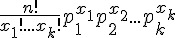
意義：n 次試驗中各種情況分別出現 x1, x2, ..., xk 次的機率
範圍： 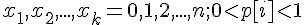
R 函數：multinom(size, prob) ; n:size:樣本數, p:prob:各種情況的機率
R 函數範例：
rmultinom(10, size = 12, prob=c(0.1,0.2,0.8))
pr <- c(1,3,6,10) # normalization not necessary for generation
rmultinom(10, 20, prob = pr)
## all possible outcomes of Multinom(N = 3, K = 3)
X <- t(as.matrix(expand.grid(0:3, 0:3))); X <- X[, colSums(X) <= 3]
X <- rbind(X, 3:3 - colSums(X)); dimnames(X) <- list(letters[1:3], NULL)
X
round(apply(X, 2, function(x) dmultinom(x, prob = c(1,2,5))), 3)執行結果：
> rmultinom(10, size = 12, prob=c(0.1,0.2,0.8))
[,1] [,2] [,3] [,4] [,5] [,6] [,7] [,8] [,9] [,10]
[1,] 1 1 1 0 2 0 1 1 0 2
[2,] 1 2 3 0 3 0 2 1 1 2
[3,] 10 9 8 12 7 12 9 10 11 8
>
> pr <- c(1,3,6,10) # normalization not necessary for generation
> rmultinom(10, 20, prob = pr)
[,1] [,2] [,3] [,4] [,5] [,6] [,7] [,8] [,9] [,10]
[1,] 1 1 2 2 1 1 2 1 1 2
[2,] 2 2 2 2 6 7 3 5 4 4
[3,] 9 4 8 4 8 8 4 7 3 6
[4,] 8 13 8 12 5 4 11 7 12 8
>
> ## all possible outcomes of Multinom(N = 3, K = 3)
> X <- t(as.matrix(expand.grid(0:3, 0:3))); X <- X[, colSums(X) <= 3]
> X <- rbind(X, 3:3 - colSums(X)); dimnames(X) <- list(letters[1:3], NULL)
> X
[,1] [,2] [,3] [,4] [,5] [,6] [,7] [,8] [,9] [,10]
a 0 1 2 3 0 1 2 0 1 0
b 0 0 0 0 1 1 1 2 2 3
c 3 2 1 0 2 1 0 1 0 0
> round(apply(X, 2, function(x) dmultinom(x, prob = c(1,2,5))), 3)
[1] 0.244 0.146 0.029 0.002 0.293 0.117 0.012 0.117 0.023 0.016
> 幾何分布 (Geometric distribution)

範圍：r=1,2,3,.... ; x= r, r+1, r+2, ....
意義：第一次成功所需要的試驗次數。
R 函數： geom(prob) ; p:prob:成功機率, x-1:size:失敗次數, q:失敗機率
- R 的公式：

- R 當中的 x 代表失敗次數，而非第一次成功的次數，因此 R 當中的 x 相當於上式中的 (x-1)
- http://stat.ethz.ch/R-manual/R-patched/library/stats/html/Geometric.html
特性：


動差生成函數： 
R 程式範例：曲線圖
p=0.7; k=seq(0,10)
plot(k, dgeom(k, p), type='h', main='dgeom(p=0.5)', xlab='k')R 程式範例：
qgeom((1:9)/10, prob = .2)
Ni <- rgeom(20, prob = 1/4); table(factor(Ni, 0:max(Ni)))執行結果：
> qgeom((1:9)/10, prob = .2)
[1] 0 0 1 2 3 4 5 7 10
> Ni <- rgeom(20, prob = 1/4); table(factor(Ni, 0:max(Ni)))
0 1 2 3 4 5 6 7 8 9 10 11 12 13 14 15 16 17
4 5 3 2 0 3 1 0 0 0 1 0 0 0 0 0 0 1
> 參考
超幾何分布 (Hypergeometric distribution)

意義：N 個球中有白球有 r 個，黑球 N-r 個，取出 n 個球，其中有 x 個白球的機率; (取後不放回)
R 函數： hyper(m,n,k) = choose(m, x) choose(n, k-x) / choose(m+n, k)
- R 函數的意義：m+n 個球中有白球有 m 個，黑球 n 個，取出 k 個球，其中有 x 個白球的機率; (取後不放回)
- R 的網址：http://stat.ethz.ch/R-manual/R-patched/library/stats/html/Hypergeometric.html
- 課本與 R 之間對應公式：N=>m+n; n=>k; r=>m
- R 的公式：

特性


{kind=link}
動差生成函數： 
R 程式範例：曲線圖
m=10; n=5; k=8
x=seq(0,10)
plot(x, dhyper(x, m, n, k), type='h', main='dhyper(m=10,n=5,k=8)', xlab='x')
R 程式範例：
m <- 10; n <- 7; k <- 8
x <- 0:(k+1)
rbind(phyper(x, m, n, k), dhyper(x, m, n, k))
all(phyper(x, m, n, k) == cumsum(dhyper(x, m, n, k)))# FALSE
## but error is very small:
signif(phyper(x, m, n, k) - cumsum(dhyper(x, m, n, k)), digits=3)執行結果：
> m <- 10; n <- 7; k <- 8
> x <- 0:(k+1)
> rbind(phyper(x, m, n, k), dhyper(x, m, n, k))
[,1] [,2] [,3] [,4] [,5] [,6] [,7]
[1,] 0 0.0004113534 0.01336898 0.117030 0.4193747 0.7821884 0.9635952
[2,] 0 0.0004113534 0.01295763 0.103661 0.3023447 0.3628137 0.1814068
[,8] [,9] [,10]
[1,] 0.99814891 1.00000000 1
[2,] 0.03455368 0.00185109 0
> all(phyper(x, m, n, k) == cumsum(dhyper(x, m, n, k)))# FALSE
[1] FALSE
> ## but error is very small:
> signif(phyper(x, m, n, k) - cumsum(dhyper(x, m, n, k)), digits=3)
[1] 0.00e+00 0.00e+00 1.73e-18 0.00e+00 -5.55e-17 1.11e-16 2.22e-16
[8] 2.22e-16 2.22e-16 2.22e-16
> 參考文獻
布瓦松分布 (Poisson distribution)
意義：在單位時間內，事件出現平均 λ 次的機率分布。
公式： 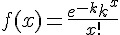
R 的公式： 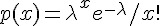
R 函數：pois(λ:事件平均出現次數)
變數意義： 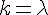
特性：
布瓦松分布可以與泰勒展開式中的 Maclaurin 級數對映起來，所謂的 Maclaurin 級數就是泰勒展開式在 0 點的展開式。
If the Taylor series is centered at zero, then that series is also called a Maclaurin series, named after the Scottish mathematician Colin Maclaurin, who made extensive use of this special case of Taylor series in the 18th century.
布瓦松分配的公式來源
布瓦松分配可視為二項分配的極限形式，當 binom(n, p) 當中 n 趨近於無限大，而 p 非常小的時候，就會趨近布瓦松分配。
關鍵公式： 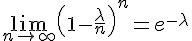
證明過程：
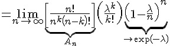 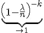
其中的 An 趨近於 1 ，證明如下：
期望值與變異數
- 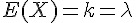
- 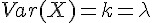
動差生成函數： 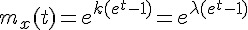
R 程式範例：曲線圖
lambda=5.0; k=seq(0,20);
plot(k, dpois(k, lambda), type='h', main='dpois(lambda=4.0)', xlab='k')
R 程式範例：
require(graphics)
-log(dpois(0:7, lambda=1) * gamma(1+ 0:7)) # == 1
Ni <- rpois(50, lambda = 4); table(factor(Ni, 0:max(Ni)))
1 - ppois(10*(15:25), lambda=100) # becomes 0 (cancellation)
ppois(10*(15:25), lambda=100, lower.tail=FALSE) # no cancellation
par(mfrow = c(2, 1))
x <- seq(-0.01, 5, 0.01)
plot(x, ppois(x, 1), type="s", ylab="F(x)", main="Poisson(1) CDF")
plot(x, pbinom(x, 100, 0.01),type="s", ylab="F(x)",
main="Binomial(100, 0.01) CDF")執行結果：
> require(graphics)
>
> -log(dpois(0:7, lambda=1) * gamma(1+ 0:7)) # == 1
[1] 1 1 1 1 1 1 1 1
> Ni <- rpois(50, lambda = 4); table(factor(Ni, 0:max(Ni)))
0 1 2 3 4 5 6 7 8
1 3 6 8 11 11 4 3 3
>
> 1 - ppois(10*(15:25), lambda=100) # becomes 0 (cancellation)
[1] 1.233094e-06 1.261664e-08 7.085799e-11 2.252643e-13 4.440892e-16
[6] 0.000000e+00 0.000000e+00 0.000000e+00 0.000000e+00 0.000000e+00
[11] 0.000000e+00
> ppois(10*(15:25), lambda=100, lower.tail=FALSE) # no cancellation
[1] 1.233094e-06 1.261664e-08 7.085800e-11 2.253110e-13 4.174239e-16
[6] 4.626179e-19 3.142097e-22 1.337219e-25 3.639328e-29 6.453883e-33
[11] 7.587807e-37
>
> par(mfrow = c(2, 1))
> x <- seq(-0.01, 5, 0.01)
> plot(x, ppois(x, 1), type="s", ylab="F(x)", main="Poisson(1) CDF")
> plot(x, pbinom(x, 100, 0.01),type="s", ylab="F(x)",
+ main="Binomial(100, 0.01) CDF")
>